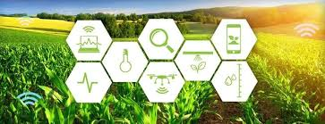
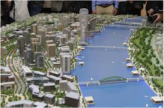

Projects
VelocityVigil: Automated Speed Violation Detection System (Ongoing)
- Developing a system to track vehicle speed using CCTV footage at two fixed checkpoints (start and end), applying the formula Speed = Distance / Time to determine speed.
- Designing the logic to automatically generate challans for vehicles exceeding the speed limit, with potential deployment in high-end roads like the Atal Setu.
- Utilized tools and technologies, integrating time-stamp data from CCTV feeds to calculate accurate travel durations.
- Emphasized real-time traffic monitoring, digital enforcement, and smart transportation applications.

HarvestIQ: Smart Crop Recommendation System
- Engineered a fuzzy logic-based crop recommendation system integrating environmental and soil parameters, achieving a significant increase in optimal crop selection compared to traditional methods, according to field tests.
- Enabled adaptive and data-driven crop planning to support precision agriculture and improve farming outcomes.

HydroShield: Detection of Illegal Occupations along Waterfronts
- Developed an AI/ML-based system to detect illegal occupation along water bodies by analyzing satellite imagery.
- Implemented machine learning models to enable automated monitoring and support environmental protection efforts.
Other Projects
- Actively contributing to diverse projects across multiple domains, demonstrating versatility and broad technical expertise.